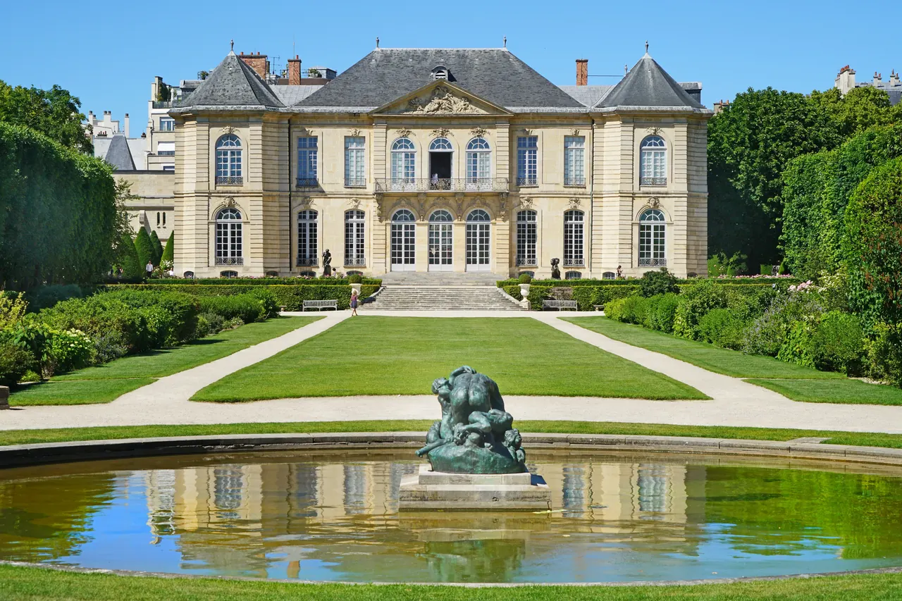

_%C3%A0_Paris,_13_juin_2021_01.jpg){kind=link}
관광·미술관
Nous avons déjà des billets.
이미 표가 있습니다.
누 자봉 데자 데 비예

파리 7구 앵발리드(Les Invalides) 옆, 울창한 고목과 장미로 둘러싸인 18세기 저택 오텔 비롱(Hôtel Biron)은 근대 조각의 아버지 오귀스트 로댕(Auguste Rodin)이 1908년부터 세상을 떠날 때까지 작업실이자 거처로 사용했던 유서 깊은 공간이다.
로댕은 자신의 전 작품과 수집품을 국가에 기증하는 조건으로 이곳을 미술관으로 보존할 것을 요청했으며, 1919년 정식 개관 이래 파리에서 가장 우아하고 사색적인 야외 정원 미술관으로 사랑받고 있다.
"미술관 내부의 섬세한 대리석 조각과 로댕의 뮤즈이자 비운의 천재 카미유 클로델의 전시실, 그리고 푸른 잔디와 분수대 사이에 당당히 서 있는 <생각하는 사람>과 <지옥의 문>을 감상하는 야외 정원 산책은 오르세 미술관 관람 후 최고의 휴식이자 예술적 감동을 선사한다."
| 항목 | 상세 정보 |
|---|---|
| 위치 | 77 Rue de Varenne, 75007 Paris |
| 운영 시간 | 화요일–일요일 10:00–18:30 (마지막 입장 17:45) / 매주 월요일 휴관 |
| 입장료 | 일반 통합권(실내+정원) €14.00–€15.00 (Paris Museum Pass 적용 가능) |
| 사전 온라인 예매 (권장) | 공식 웹사이트(musee-rodin.fr)에서 입장 시간 슬롯 예약 권장 |
| 교통 접근 | 메트로 13호선 Varenne역 도보 1분 (역 플랫폼에 로댕 조각 복제품 전시) |
| 연계 도보 | Musée d'Orsay 도보 12분, Les Invalides (앵발리드 군사박물관) 도보 5분 |
Nous avons déjà des billets.
이미 표가 있습니다.
누 자봉 데자 데 비예
On peut prendre des photos ?
사진 찍어도 되나요?
옹 푀 프랑드르 데 포토
Où commence la visite ?
관람은 어디서 시작하나요?
우 코망스 라 비지트

1868년 앙리 라브루스트가 주철 기둥과 9개 도자기 돔으로 완성한 19세기 건축의 걸작 '라브루스트 열람실'과 일반에 전면 무료 개방된 거대한 타원형 '오발 열람실(Salle Ovale)', 프랑스 국립도서관 박물관.

18세기 원형 곡물거래소를 세계적인 건축가 안도 다다오가 노출 콘크리트 원통 실린더로 리노베이션한 현대미술관. 프랑수아 피노 회장의 세계적 현대미술 컬렉션과 1889년 돔 천장 무역 파노라마 프레스코화.

렌조 피아노와 리처드 로저스가 건물 배관과 골격을 외벽으로 노출시킨 20세기 하이테크 건축의 전설이자 유럽 최대 근현대미술관. ⚠ 2025년 가을부터 2030년까지 전면 개보수 공사로 본관 폐관 중.

클로드 모네가 43년간 직접 꽃과 연못을 가꾸며 불후의 『수련』 대작을 창조해낸 살아있는 인상파 캔버스. 초록색 일본식 다리가 걸린 '물의 정원(Jardin d'eau)'과 핑크빛 모네 생가 아틀리에.

1900년 파리 만국박람회를 위해 건립된 45m 높이 아르누보 철골 유리 네이브(Nave)의 기념비적 국립 전시장. 2024 파리 올림픽을 거쳐 리노베이션 완료 후 재개관한 파리 문화 예술의 중심지.

중세 소르본 대학 교수와 학생들이 공용어로 라틴어를 쓰던 데서 유래한 800년 파리 지성의 요람이자 센 강 좌안(Rive Gauche)의 심장. 프랑스 위인들의 성소 팡테옹(Panthéon), 셰익스피어 앤 컴퍼니, 뤽상부르 공원.